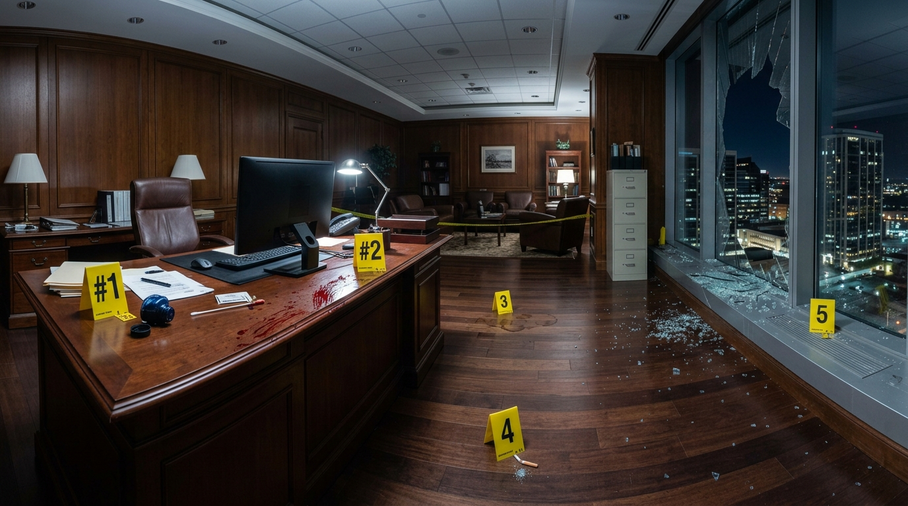
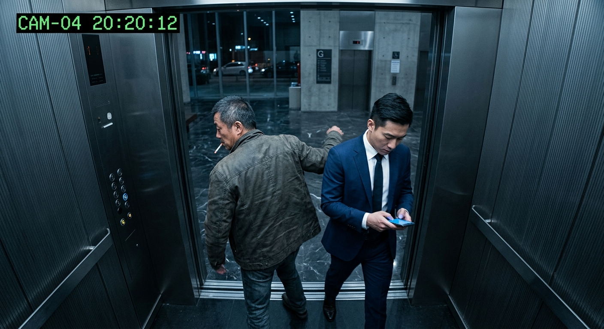
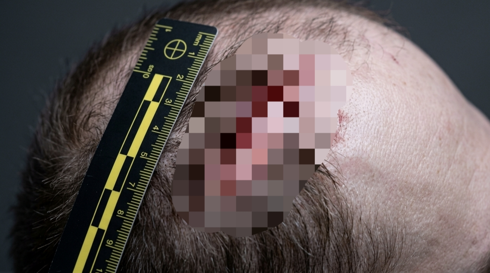

死者：陆远（资深记者）
地点：深讯网办公楼前方的空地
死因：高坠致重度颅脑损伤

办公桌倒翻墨水，桌角发现血迹DNA。现场留有咖啡渍与烟头...

电梯记录Vivian、老张、陈总监进出时刻。网关显示20:15 K发起的远程控制...
保洁阿姨笔录：
听到咆哮“就算是1000万也买不通我！”及安全门急促离开的声音...
异常交易回单
2026-09-05 20:21:44
公司专户 -> 陆远：
￥1,000,000.00

死亡时间19:00-21:00。死者指甲缝残存Vivian的DNA...